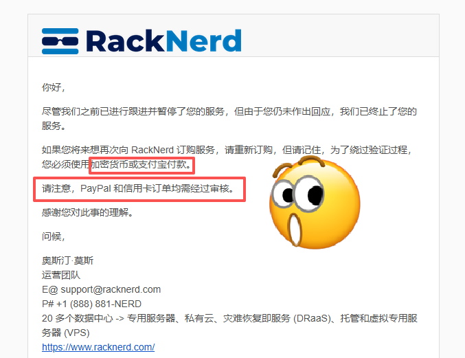

奶昔🥤
@realNyarime
@ygkkkg PayPal 争议商家，即便是老大哥 Vultr 也是 100% 能拿回来
银行卡得看，像信用卡也可以 Dispute 让银行去争议，也有极大概率能要的回来
使用支付宝或虚拟币本身就是实时到账，这样看，是不是要不回去了？

甬哥侃侃侃ygkkk
@ygkkkg
由于此前我使用 N26 银行卡购买 RackNerd VPS 时被官方要求退款，我顺势测试了其审核底线。最终结果是账号被关闭。
同时RackNerd官方再次明确说明：使用加密货币或支付宝支付可绕过身份验证，而 PayPal 与银行卡支付则需要审核。 https://t.co/bFb4KzEx0B